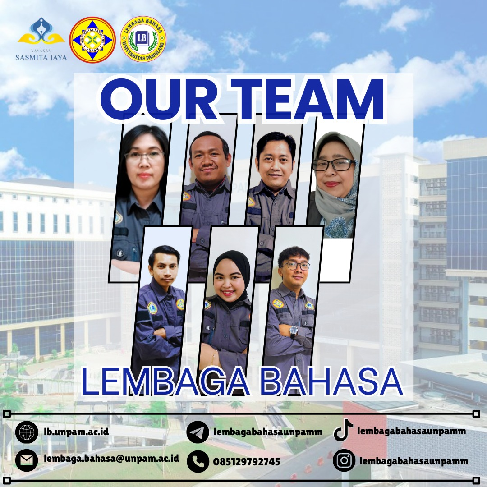
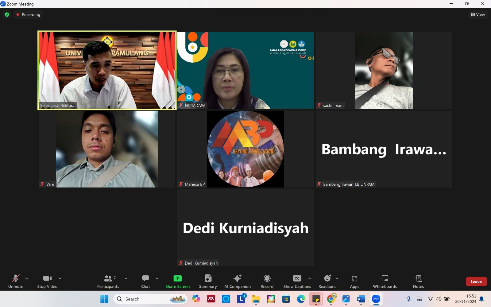
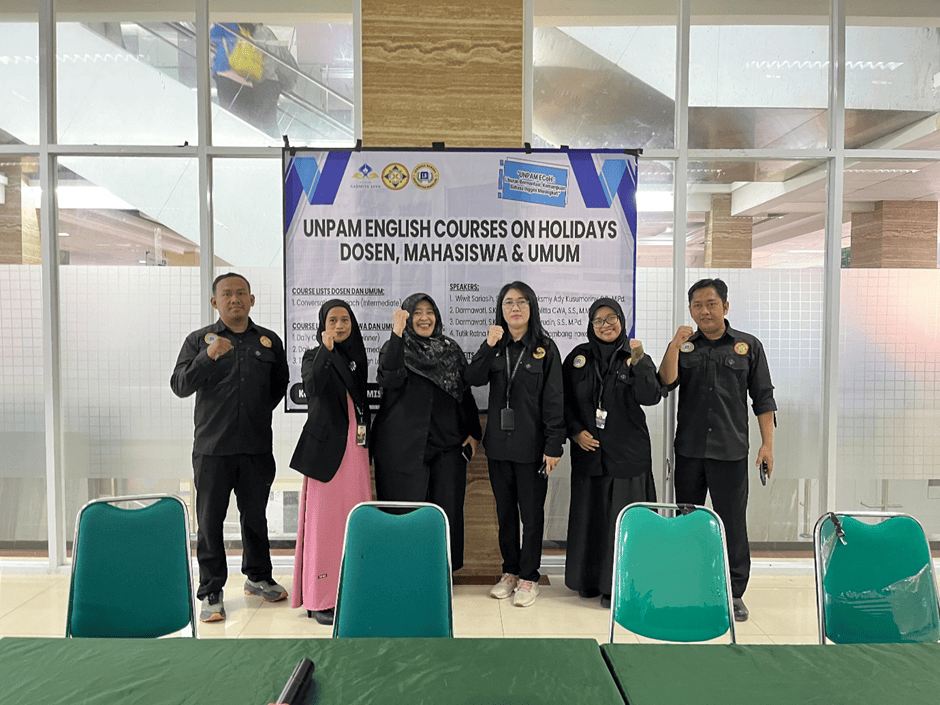
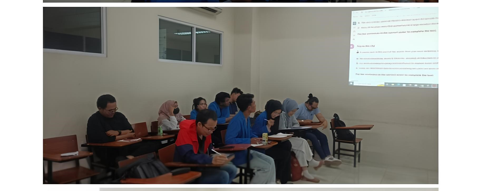
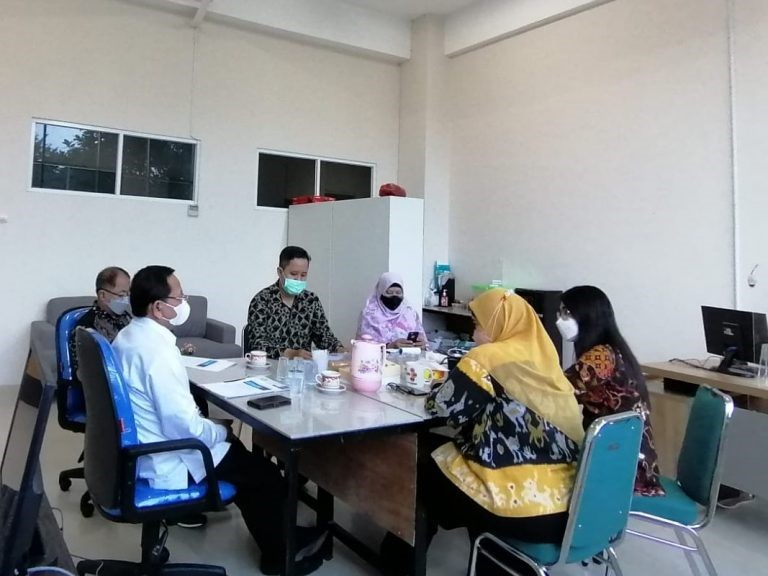

Lembaga Bahasa
Universitas Pamulang
Lembaga Bahasa Universitas Pamulang merupakan unit strategis yang berperan sebagai pusat pengembangan kompetensi bahasa yang unggul, terjangkau, dan humanis. Lembaga ini memfasilitasi pelatihan, pengujian, dan layanan konsultasi kebahasaan untuk mendukung kemajuan akademik, profesional, dan kebudayaan, baik di lingkungan universitas maupun masyarakat luas. Dengan fokus pada pelatihan TOEFL, pengajaran Bahasa Inggris dan bahasa asing lainnya, serta penerjemahan.

Lembaga Bahasa Universitas Pamulang didirikan sebagai pusat pengembangan kemampuan bahasa, khususnya bahasa Inggris, yang saat ini menjadi kebutuhan penting dalam dunia akademik maupun dunia kerja. Lembaga ini resmi berdiri berdasarkan SK Rektor Nomor 396/A/O/UNPAM/2019.
Sejak berdiri, lembaga ini terus berkembang dan berkomitmen untuk menyediakan layanan pengembangan bahasa yang berkualitas dan terjangkau bagi sivitas akademika maupun masyarakat umum.
Kami menyelenggarakan berbagai program seperti pelatihan TOEFL, BIPA (Bahasa Indonesia bagi Penutur Asing), serta English Courses on Holiday (ECoH). Kami juga menjalin kerja sama dengan British Council melalui program EnglishScore.
Komitmen kami dalam memberikan layanan terbaik telah membuahkan berbagai prestasi membanggakan yang diakui secara internal maupun eksternal.
Penghargaan dalam ajang **UNPAM Creator Academy 2026** sebagai hasil kreativitas dan konsistensi tim dalam mengelola media sosial sebagai wadah informasi.
Penghargaan atas website yang informatif dan bermanfaat, diberikan langsung oleh Ketua Yayasan Sasmita Jaya, **Dr. Pranoto, S.E., M.M.**
Kepala Lembaga Bahasa, **Sri Nitta Crissiana Wirya Atmaja**, mengungkapkan rasa syukur atas pencapaian ini. Penghargaan ini menjadi motivasi untuk terus meningkatkan kualitas layanan digital lembaga sebagai wajah institusi di era modern.
Membahas pengembangan program kerja lembaga bahasa kedepan...
Peningkatan fasilitas pembelajaran dari Perpustakaan UNPAM...
Kemendiktisaintek mengapresiasi fasilitas dan sistem akademik di Serang...
UNPAM memberikan bantuan untuk keluarga almarhumah Suheni Sintiasari...
ORBIT UNPAM menjadi wadah bagi siswa menuju dunia kampus dan karier cemerlang...
Kerjasama penguatan kompetensi bahasa Inggris antara UNPAM dan Nawasena...



